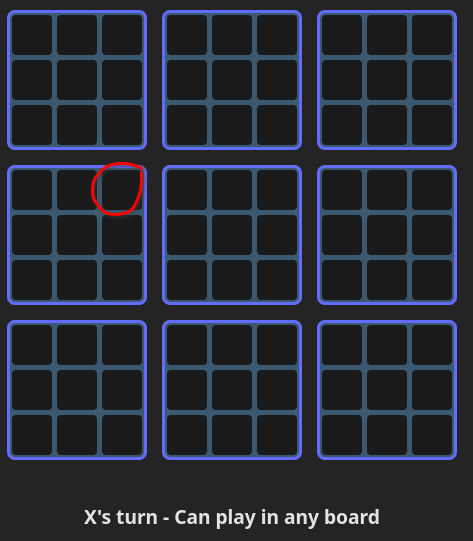
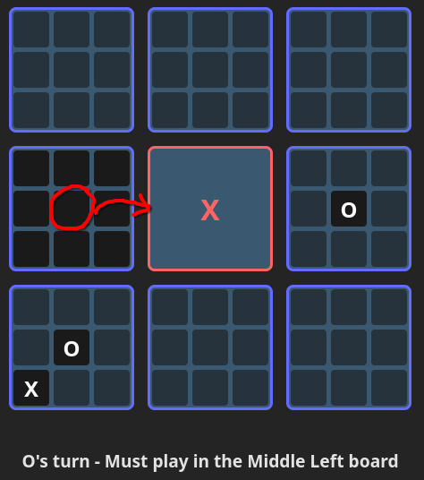
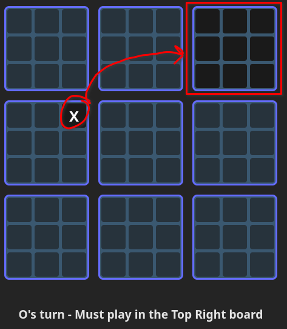
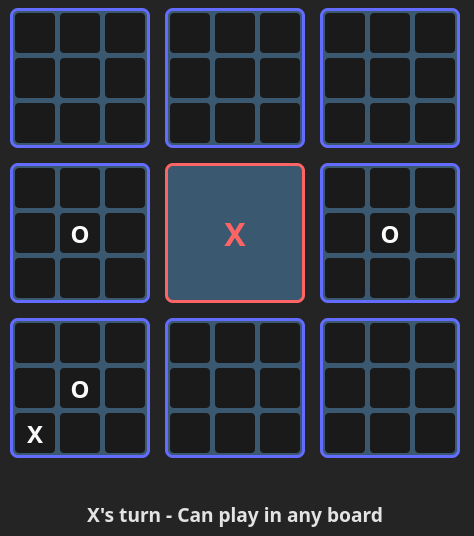

How to Play Tac-Tic-Toe
Objective
The goal is to win three small tic-tac-toe boards in a row like in the classic game to claim victory - on the big board.
Basic Rules
- The big board is a 3x3 grid of small tic-tac-toe boards.
- When a player plays in a cell of a small board, the index of that cell is index of the small board that the next player must play in. 
- Win small tic-tac-toe boards to claim that space in the big board.
- If sent to a completed board, your opponent can play in any available board. 
- Players alternate turns, starting with X.
- If a small board results in a draw, it is considered a neutral space.


Strategy Tips
- Plan ahead and think about your opponent's possible moves.
- Control the center board to increase your chances of winning.
- Force your opponent into boards where you have an advantage.